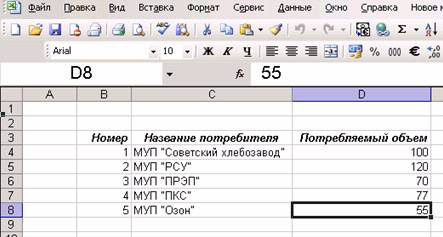
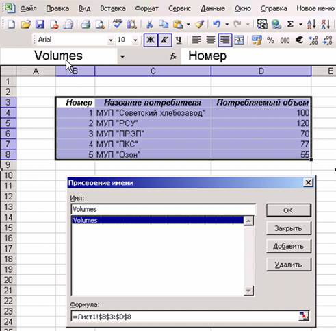
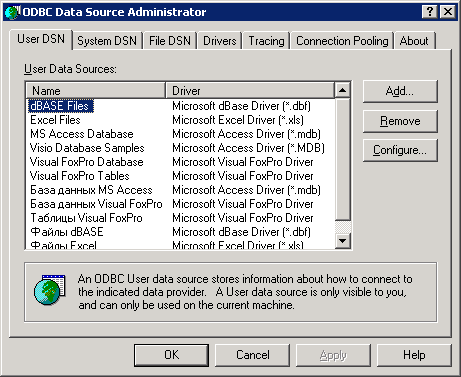
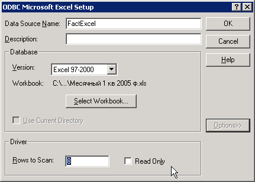
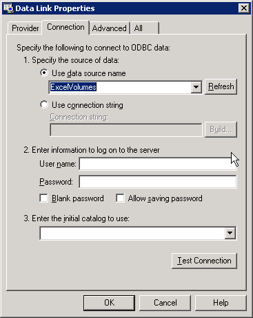

Подключение к таблице Excel средствами ADO
6-9 минут
Подключение к таблице Excel средствами ADO, создание именованного диапазона, создание источника данных ODBC
Очень часто в практической работе возникает необходимость подключиться к таблице на листе Excel, как к базе данных. Конечно, можно работать и средствами объектной модели Excel (см. раздел 11 "Программирование в Excel"), но использование объектов ADO дает значительные преимущества:
Подключиться к таблице на листе Excel совсем не сложно, но самостоятельно догадаться до всей последовательности действий бывает трудно. Поэтому ниже приведена пошаговая последовательность действий.
Предположим, что у нас есть книга Excel, которая называется Fact.xls и лежит в корневом каталоге диска C:. На первом листе этой книге есть такая совсем несложная таблица, представленная на рис. 9.7

Рис. 9.7 Таблица в Excel, к которой нужно обратиться средствами ADO
Нам необходимо подключиться к этой таблице, как к базе данных. Что нам нужно сделать?
Первый этап — это подготовка. Иногда можно обойтись и без нее (если лист Excel — это одна таблица). На практике же часто бывает так, что на листе у нас несколько таблиц, или таблица с комментариями, или внизу таблицы посчитаны итоги и т.п. Чтобы не смущать Excel, лучше явно указать нашу таблицу. Сделать это очень просто: нужно ее выделить (в нашем случае — выделить диапазон с B3 по D8) и присвоить выделенному диапазону имя. Для этого в Excel в меню Вставка нужно выбрать Имя -> Присвоить и ввести нужное имя. В нашем случае мы присвоим имя Volumes (см. рис. 9.8)

Рис. 9.8 Присваиваем имя диапазону
Обратите внимание, что нужно выбирать диапазон вместе с названиями столбцов.
После того, как имя присвоено, Excel можно закрывать — он больше нам не нужен.
Дальше по плану нужно было бы создать файл *.UDL и настроить в нем подключение к нашему файлу C:\Fact.xls. Однако напрямую из файла UDL можно работать только с драйверами OLE DB, а нужного драйвера, к сожалению, нет (Microsoft JET 4.0 OLE DB Provider хочет работать только с файлами MDB). Поэтому делаем еще один подготовительный шаг — создаем источник данных ODBC (поскольку драйвер ODBC для подключения к Excel есть). Первое действие — в Панели управления открываем Administrative Tools (Средства администрирования) и два раза щелкаем по иконке Data Sources (ODBC) (Источники данных ODBC). Откроется окно, аналогичное представленному на рис. 9.9.

Рис. 9.9 Окно управления источниками данных ODBC
В вашем распоряжении — три типа DSN (Data Source Name, то есть источников данных ODBC):
Чаще всего используются System DSN — системные источники данных, поэтому переходим на вкладку System DSN и нажимаем на кнопку Add (Создать).
Первое, о чем нас спросят — это о типе драйвера, который мы хотим использовать. Выбираем, конечно, Microsoft Excel Driver и нажимаем на кнопку Finish. Но создание источника данных на этом далеко не кончилось.
На следующем экране нам потребуется:
В итоге окно может выглядеть так, как представлено на рис. 9.10.

Рис. 9.10 Настраиваем источник ODBC для подключения к файлу Excel
Осталось нажать два раза на кнопку OK, чтобы закрыть окно создания источника данных ODBC.
В принципе, в коде программы можно написать значение свойства ConnectionString вручную, воспользовавшись документацией по ADO. Выглядеть соответствующая строка, к примеру, может так:
cn.ConnectionString = "Provider=MSDASQL.1;DSN = FactExcel;DBQ=C:\Fact.xls ;"
Но зачем что-то писать руками, когда можно сгенерировать нужное значение автоматически? А сгенерировать можно очень просто:

Рис. 9.11 Настраиваем параметры подключения к созданному источнику ODBC
Итоговый код процедуры для подключения к Excel может выглядеть так:
Public Sub ConnectToExcel()
Dim cn As New ADODB.Connection
cn.ConnectionString = "Provider=MSDASQL.1;Data Source=ExcelVolumes"
cn.Open
'Про Recordset мы будем говорить в следующем разделе
'Этот код помещен для наглядной проверки
Dim rs As New ADODB.Recordset
rs.Open "Volumes", cn
MsgBox rs.GetString
End Sub
Чтобы подключиться к файлу Excel, нам потребовалось: